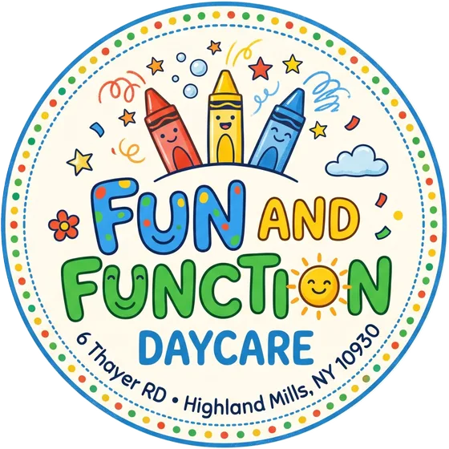

Fun and Function
A home daycare in Highland Mills where kids play hard and learn the everyday stuff too.
6 Thayer Rd, Highland Mills, NY 10930
pick a crayon to look around
The name says what we do
Kids learn best when they are having a good time. They also need practice with the small, everyday skills that make kindergarten go smoothly. We plan for both.
Fun
Play is the main event.
- Free play with blocks, dress-up, puzzles and a pretend kitchen
- Art with real crayons, paint, glue and paper, messy on purpose
- Outside time every day the weather allows
- Songs, stories and dancing at circle time
Function
Skills for everyday life.
- Washing hands, putting on shoes and coats, cleaning up toys
- Taking turns, sharing, and using words for big feelings
- Letters, numbers, colors and shapes built into play
- Helping set the table and serving themselves at meals
Kids' corner
Grab a crayon and draw. Hand the phone to your little one.
Follow the crayon through our day
Young children feel safe when they know what comes next, so the day runs in the same order every time.
- 1
Arrival
Hellos, cubbies, and free play while friends arrive.
- 2
Breakfast
A family-style meal at the table together.
- 3
Circle time
Calendar, weather, a song and a story.
- 4
Projects
Art, sensory bins, building and small-group activities.
- 5
Outside
Running, climbing, chalk and bubbles in the yard.
- 6
Lunch
Everyone sits, eats and talks about their morning.
- 7
Rest
Nap for little ones, quiet books for bigger kids.
- 8
Snack
A light snack to refuel after rest.
- 9
Afternoon play
Games, puzzles, and outside again when we can.
- 10
Pick-up
A quick note to you about how the day went.
Ask for the posted schedule with times when you visit.
Getting started
Ask about openings
Call or email to check space for your child's age and the days you need.
Come for a tour
Meet us, see the play space and the yard, and bring your child along.
Complete enrollment forms
New York requires a medical statement and immunization record from your child's doctor before the first day.
Start slowly
A few shorter days at the start help your child settle in.
The details
- Hours
- Mon–Fri, add hours
- Ages
- add age range
- Meals
- what's provided
- Phone
- (845) 000-0000
- add email
Look us up. Every regulated child care program in New York is listed in the OCFS Child Care Facility Search, with its inspection history. Search for Fun and Function Daycare.
Help paying for care. Your family may qualify for the Child Care Assistance Program. The Child Care Council of Orange County can help you find out and apply.
Come see us
A tour is the best way to know if we're the right fit. Call or email to set a time, and bring your child along.
6 Thayer RdHighland Mills, NY 10930